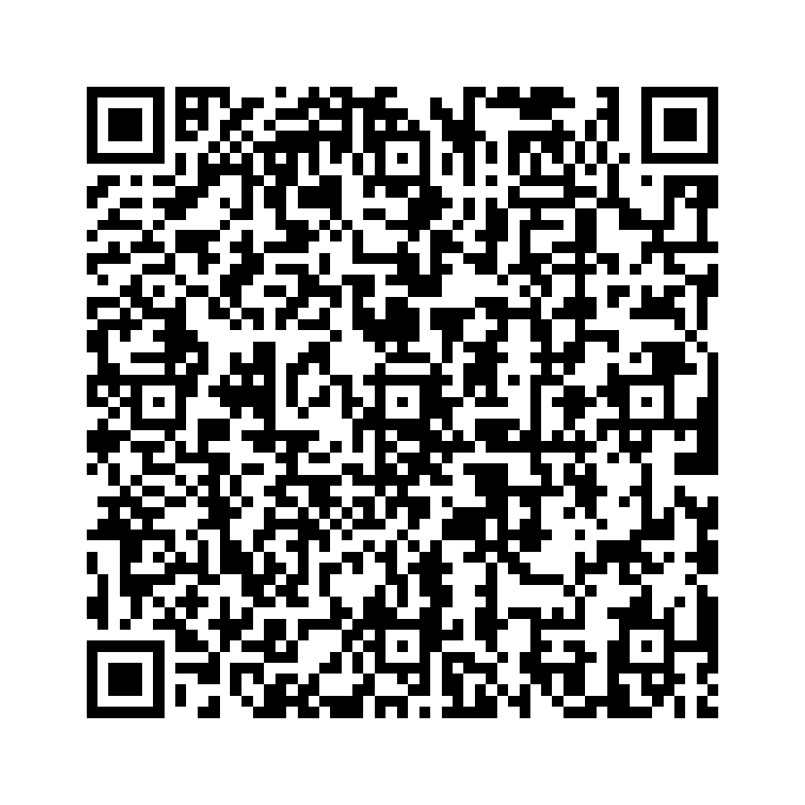

Un lugar para que todas las personas sordas alaben y adoren
El Ministerio de Sordos del Tabernáculo Bíblico Bautista «Amigos de Israel» acompaña a la comunidad sorda con estudios bíblicos, cultos con interpretación en Lengua de Señas Salvadoreña (LESSA) y actividades de convivencia.
El video de presentación en LESSA estará disponible pronto.
Visítanos
Los domingos a las 9:00 a. m. hay clase bíblica para personas sordas. Los demás cultos tienen interpretación en LESSA.
Tabernáculo Bíblico Bautista «Amigos de Israel»
Cojutepeque
El mapa estará disponible pronto.
Conoce el ministerio
Toca una tarjeta para ver la sección completa.
Publicaciones
Lo más recienteNovedades del ministerio en Facebook, TikTok y YouTube.
Ver todasHistoria
2008
Cómo nació el ministerio, nuestra misión y visión, fechas especiales y quiénes servimos.
Leer la historiaCultura Sorda
Qué es la comunidad Sorda, sus rasgos y la Lengua de Señas Salvadoreña.
LESSA+300 lenguas de señas23 de septiembre Conocer másGalería
Registro
¿Nos visitas por primera vez? Regístrate con el código QR o el formulario.

RegistrarmeBiblioteca
Libros con señas y diccionarios en PDF para ver o descargar.
Ver materialesRedes sociales
Síguenos para estar al tanto de lo que hacemos.
FacebookTikTokYouTube Ver redes